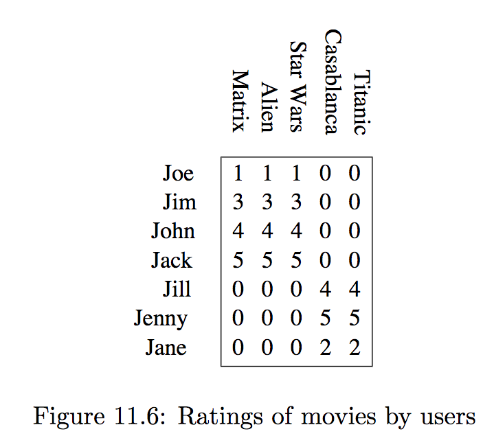
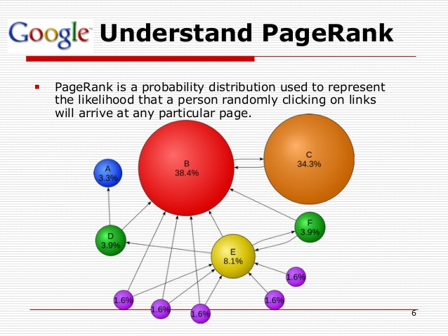

AP
Activity tables show how users map their choices,
or how available products map onto their adopters.

Data Science view: 7 user profiles; 18 datapoints of user review.
Network science view: a weighted, binary relationship between users and films.
Let’s step back and see what Geometry gives us.
Most activity matrices represent the connections between n entities (e.g., subscribers) and m entities (e.g., films) with \(n<>m\).
Sometimes the connections is between the same entities, such as endorsement, teams defeating other teams, friends or followers on social networks etc.
In such cases, the matrix is square.
Standard Geometry holds and we can extract its eigenpairs.
There is a space in n dimensions
Each point is represented by an n-dimensional vector \(\mathbf{x}\) (or \(\vec{x}\))
A transformation: a expansion/contraction or a rotation or a combination thereof, is represented by a matrix, \(A\)
The resulting point is computed as \(A \mathbf{x}\).
\[ \mathbf{x} = \begin{pmatrix} 1 \\ 0.5 \end{pmatrix} \]
\[ M = \begin{pmatrix} 1 & 2\\ 3 & 4 \end{pmatrix} \]
\[ M\mathbf{x} = \begin{pmatrix} 2 \\ 5 \end{pmatrix} \]
M does anti-clockwise rotation and expansion at once.
If matrix \(A\) has a real \(\lambda\) and a vector \(\mathbf{e}\) s.t.
\[A\mathbf{e} = \lambda \mathbf{e}\]
then \(\lambda\) is an eigenvalue and \(\mathbf{e}\) an eigenvector of A.
If A has rank n then there could be up to n eigenpairs. In practice,
they might not be real, nor \(\neq 0\), and
are always costly: \(n^\alpha)\) scalar multiplications, n being the size of the matrix and \(\alpha \approx 2.81\).
The effect of A can be decomposed into translation + rotation thanks to the extraction of eigenpairs \(\langle \lambda, \vec{v} \rangle\):
\[ A\mathbf{e} = \lambda \mathbf{e} \]
Consider the M matrix again:
\[ M = \begin{pmatrix} 1 & 2\\ 3 & 4 \end{pmatrix} \]
\[ M = \begin{pmatrix} 1 & 2\\ 3 & 4 \end{pmatrix} \]
solve \(M\mathbf{e} = \lambda\mathbf{e}\) to find
\(\lambda_1 \approx 5.372\) and \(\lambda_2 \approx -0.372\).
\(\lambda_1 \approx 5.372\) and \(\lambda_2 \approx -0.372\).
\[ \mathbf{e_1} \approx \begin{pmatrix} 0.416 \\ 0.909 \end{pmatrix} \]
\[ \mathbf{e_2} \approx \begin{pmatrix} 0.824 \\ -0.0566 \end{pmatrix} \]
M now can be re-defined as the product of simpler operations:
\[ M = Q\Lambda Q^{-1} \]
Stretching, followed by rotation followed by ‘stretching back’
\[ Q = \begin{pmatrix} \mathbf{e_1} & \mathbf{e_2} \end{pmatrix} \]
\[ \Lambda = \begin{pmatrix} \lambda_1 & 0\\ 0 & \lambda_2 \end{pmatrix} \]
\[ \begin{pmatrix} 1 & 2\\ 3 & 4 \end{pmatrix} = \]
\[ \begin{pmatrix} 0.416 & 0.824\\ 0.909 & -0.566 \end{pmatrix} \begin{pmatrix} 5.372 & 0 \\ 0 & -0.372 \end{pmatrix} \begin{pmatrix} 0.575 & 0.837\\ 0.924 & -0.423 \end{pmatrix} \]
\[M\mathbf{x}\, = \begin{pmatrix} 1 & 2\\ 3 & 4 \end{pmatrix} \begin{pmatrix} 1 \\ 0.5 \end{pmatrix} \]
\[ \begin{pmatrix} 0.416 & 0.824\\ 0.909 & -0.566 \end{pmatrix} \begin{pmatrix} 5.372 & 0 \\ 0 & -0.372 \end{pmatrix} \begin{pmatrix} 0.575 & 0.837\\ 0.924 & -0.423 \end{pmatrix} \begin{pmatrix} 1 \\ 0.5 \end{pmatrix} \]
\[ M\mathbf{x} = \begin{pmatrix} 0.416 & 0.824\\ 0.909 & -0.566 \end{pmatrix} \begin{pmatrix} 5.372 & 0 \\ 0 & -0.372 \end{pmatrix} \begin{pmatrix} 0.994 \\ 0.712 \end{pmatrix} \]
\[ M\mathbf{x} = \begin{pmatrix} 0.416 & 0.824\\ 0.909 & -0.566 \end{pmatrix} \begin{pmatrix} 5.340 \\ -0.265 \end{pmatrix} \]
\[ M\mathbf{x} = \begin{pmatrix} 2.003 \\ 5.004 \end{pmatrix} \]
A is called symmetric when \(A=A^T\)
Example matrix M is not symmetric:
\[ M = \begin{pmatrix} 1 & 2\\ 3 & 4 \end{pmatrix} \neq \begin{pmatrix} 1 & 3\\ 2 & 4 \end{pmatrix} = M^T \]
A is called positive semidefinite when, for any \(\mathbf{x}\), we have
\[\mathbf{x}^T A \mathbf{x} \ge 0\]
In such case its eigenvalues are guaranteed non-negative: \(\lambda_i\ge 0\),
this helps interpretation of activity matrices.
For rectangular matrices Eigendecomposition is not defined.
SVD will provide a similar decomposition for data matrices of any size.
Details are in the [Goodfellow et al.] textbook and will be introduced later on.
Adjacency matrices represent connections between entities in a network (graph), e,g., the Web.
The eigenvalues of adjacency matrices provide bounds for several network features.
Google PageRank algorithm is spectral network anal.

Early applications in Psychology, Social science, Bibliometrics, Economics, and Choice theory (seriously).
Given a matrix representing preference or likeability between people, can we rank the participants (from best to worst) on the basis of their general, intrinsic likeability?
[Seely, 1949] created an index of likeability based on the ideas of diffusion: it is important to be liked by people who in turn are well-liked and so on.
Let \(M\) be a square matrix where \(m_{ij}\) represents approval or endorsement (negative values represent disapproval)
my likeability index should be equal to the weighted sum of of the indices of the people who like me.
my likeability index should be equal to the weighted sum of of the indices of the people who like me.
But their likeability is turn will depend on mine…
Let’s use row vectors \(\mathbf{r} = [ r_1, r_2, \dots r_n]\):
\[\mathbf{r} = \mathbf{r} M\]
i.e., \(\mathbf{r}\) is a left eigenvector of M.
This formula might have no solution, but matrix preprocessing can assure that one exists.
Ian Goodfellow, Yoshua Bengio and Aaron Courville: Deep Learning, MIT Press, 2016.
available in HTML and PDF; it is a refresher of notation and properties: no examples and no exercises.
It can be read in the background.
Phase 1: read §§ 2.1—2.7, then § 2.11.
Phase 2: read §§ 2.8—2.10